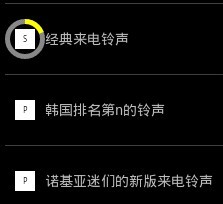

关于实现类似于圆形ProgressBar的播放进度条
效果如下：

我们要实现一个类似于小米分享中的圆形播放进度条，android自带的圆形ProgressBar是默认自动旋转的，所以无法实现，于是我们想到了使用自定义一个View，来实现这种效果。
首先来看看自己定义的View
import android.content.Context;import android.graphics.Canvas;
import android.graphics.Color;
import android.graphics.Paint;
import android.graphics.RectF;
import android.util.AttributeSet;
import android.view.View;
public class ProgressView extends View {
private float fArcNum;
private float fMax;
private float density;
public float getDensity() {
return density;
}
public void setDensity(float density) {
this.density = density;
}
public ProgressView(Context context) {
super(context);
}
public ProgressView(Context context, AttributeSet attrs) {
super(context, attrs);
}
protected void onDraw(Canvas canvas) {
super.onDraw(canvas);
Paint paint = new Paint();
if (fArcNum > 0) {
paint.setColor(Color.GRAY);
paint.setFlags(Paint.ANTI_ALIAS_FLAG);
canvas.drawCircle(40 * density / 2, 40 * density / 2,
40 * density / 2, paint);
}
paint.setColor(Color.YELLOW);
paint.setFlags(Paint.ANTI_ALIAS_FLAG);
// paint.setStrokeWidth(2);
RectF rect = new RectF(0, 0, 40 * density, 40 * density);
canvas.drawArc(rect, -90, fArcNum, true, paint);
paint.setColor(Color.BLACK);
paint.setFlags(Paint.ANTI_ALIAS_FLAG);
canvas.drawCircle(40 * density / 2, 40 * density / 2,
40 * density / 2 - 5, paint);
}
public void setProgress(float num) {
fArcNum = (num / fMax) * 360;
}
public float getfArcNum() {
return fArcNum;
}
public void setfArcNum(float fArcNum) {
this.fArcNum = fArcNum;
}
public float getfMax() {
return fMax;
}
public void setfMax(float fMax) {
this.fMax = fMax;
}
}
我们通过重写View的onDraw方法，根据fArcNum好fMax来判断当前播放到的位置，然后不停的刷新改View就实现了这个效果。至于画弧，是采用了drawArc方法，然后通过在其内部画圆遮盖多余部分实现。
下面是MediaPlayer与该View的同步处理，核心代码如下
public class Snippet { public void playAudio(final String path, final ProgressBar pb) {
Thread thread = new Thread(new Runnable() {
public void run() {
try {
if (mpMediaPlayer != null) {
mpMediaPlayer.stop();
mpMediaPlayer.release();
mpMediaPlayer = null;
}
mpMediaPlayer = new MediaPlayer();
mpMediaPlayer.setDataSource(path);
mpMediaPlayer.prepare();
mpMediaPlayer
.setOnPreparedListener(new OnPreparedListener() {
public void onPrepared(MediaPlayer mp) {
pb.setVisibility(ProgressBar.GONE);
frontPv.setfMax(mpMediaPlayer.getDuration());
frontPv.setProgress(0);
mpMediaPlayer.start();
refrash = new Thread(new Runnable() {
public void run() {
try {
while (frontPv.getfArcNum() <= 360
&& mpMediaPlayer.isPlaying()) {
if (bIsOver)
break;
frontPv.setProgress(mpMediaPlayer
.getCurrentPosition());
Thread.sleep(1000);
mHandle.sendEmptyMessage(MSG_REFRESH_UI);
}
mHandle.sendEmptyMessage(MSG_PLAY_OVER);
} catch (Exception e) {
e.printStackTrace();
}
}
});
refrash.start();
}
});
} catch (Exception e) {
e.printStackTrace();
}
}
});
thread.start();
}
}
其中frontPv是我们自己定义的view,最后发送handler是调用invalidate方法刷新该view,mpMediaPlayers是我们定义的MediaPlayer对象。我们通过在进程中每隔一秒更新frontPv当中的fArcNum并且刷新实现转动的动画效果。